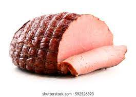

Ham is a delectable meat renowned for its rich flavor and versatility.
Its savory, smoky notes make it a popular choice for sandwiches, salads,
and breakfast dishes. The tender texture and salty, savory taste of ham can
elevate the flavor of various recipes, while its natural juiciness ensures
a succulent dining experience. Whether enjoyed as a centerpiece for holiday feasts or
a delightful addition to everyday meals, ham's deliciousness is hard to beat.
What Go HAM means
"Go ham" is an informal slang phrase that encourages someone to put in their maximum effort or energy into a
particular task or activity. It's an abbreviation for "going hard as a mothaflippa" and is often used to motivate
or challenge someone to give their all, push their limits, and show relentless determination. Whether in sports, work,
or any endeavor, going ham signifies an unwavering commitment to achieving one's goals, often with a sense of intensity
and passion that leaves nothing in reserve.
How to Cook HAM
To cook ham, start by preheating your oven to the recommended temperature,
usually around 325°F (163°C). Place the ham in a roasting pan, cover it with foil to
retain moisture, and cook for about 15-20 minutes per pound, or until it reaches an internal
temperature of 145°F (63°C). Basting with glaze or juices periodically can enhance flavor, and
letting it rest for a few minutes before slicing ensures a juicy and flavorful result.